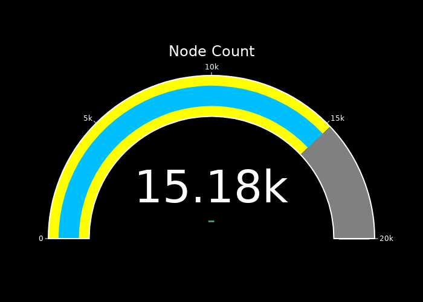

This site displays an approximate network size only. It will update every 5 minutes.
This is a little buggy, it may go offline occasionally, it will show totally incorrect numbers at times, I am working on getting it more stable.